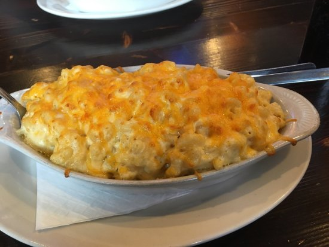

My name is Andrew Forys. I am from Lancaster, NY (near Buffalo). I attended St. Mary's High School, where I was Student Tech Director, a choir singer, and a member of the chess and "Masterminds" quiz bowl teams. My hobbies include gaming (mainly Mario Kart, Smash Bros, and EU4), speedcubing, and listening to music.
My favorite food:

I'm looking forward to learning: